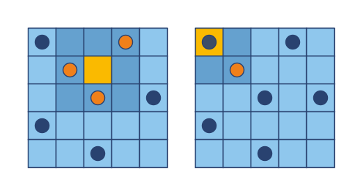

Moore Neighbourhood¶
You are given a state for a rectangular board game grid with chips in a binary matrix, where 1 is a cell with a chip and 0 is an empty cell. You are also given the coordinates for a cell in the form of row and column numbers (starting from 0). You should determine how many chips are close to this cell. Every cell interacts with its eight neighbours; those cells that are horizontally, vertically, or diagonally adjacent.
For the given examples (see the schema) there is the same grid:
((1, 0, 0, 1, 0),
(0, 1, 0, 0, 0),
(0, 0, 1, 0, 1),
(1, 0, 0, 0, 0),
(0, 0, 1, 0, 0),)
For the first example coordinates of the cell is (1, 2) and as we can see from the schema this cell has 3 neighbour chips. For the second example coordinates is (0, 0) and this cell contains a chip, but we count only neighbours and the answer is 1.
Input: Three arguments. A grid as a tuple of tuples with integers (1/0), a row number and column number for a cell as integers.
Output: How many neighbouring cells have chips as an integer.
Example:
count_neighbours(((1, 0, 0, 1, 0),
(0, 1, 0, 0, 0),
(0, 0, 1, 0, 1),
(1, 0, 0, 0, 0),
(0, 0, 1, 0, 0),), 1, 2) == 3
count_neighbours(((1, 0, 0, 1, 0),
(0, 1, 0, 0, 0),
(0, 0, 1, 0, 1),
(1, 0, 0, 0, 0),
(0, 0, 1, 0, 0),), 0, 0) == 1
Precondition:
3 ≤ len(grid) ≤ 10all(len(grid[0]) == len(row) for row in grid)
Solution:
def count_neighbours(grid, row, col):
llim, wlim = len(grid), len(grid[0])
neighbors = [(row+i, col+j) for i in [-1,0,1] for j in [-1,0,1]]
neighbors = [p for p in neighbors if 0<=p[0]<llim and 0<=p[1]<wlim]
return sum(grid[i][j] for i,j in neighbors) - grid[row][col]